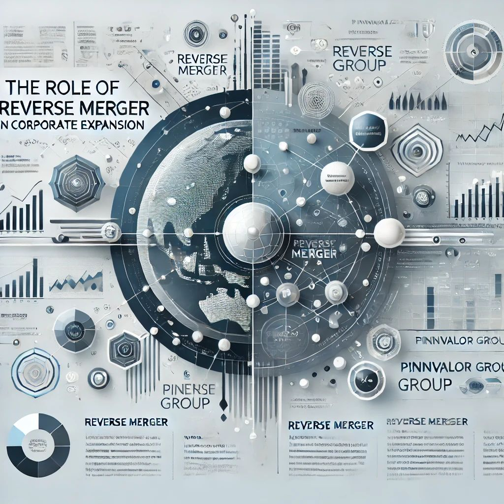

Reverse Merger: An Alternative Path to Going Public
Going public is a significant milestone for any company, traditionally achieved through an Initial Public Offering (IPO). However, not every company finds the IPO process suitable due to its high costs, regulatory hurdles, and time requirements. One lesser-known but increasingly popular alternative is the reverse merger.
What is a Reverse Merger?
A reverse merger, also known as a reverse takeover (RTO), occurs when a private company acquires a publicly traded shell company. The publicly traded company is typically a non-operational entity (or "shell") with limited assets. Through the merger, the private company assumes control and gains public trading status, bypassing the traditional IPO process.
Steps in a Reverse Merger
Step I: Identify a Suitable Shell Company
Step II: Negotiate Terms
Step III: Merger Agreement
Step IV: Ownership Transfer
Step V:Regulatory Filings
Step VI:Trading on Public Market
Successful Examples of Reverse Mergers
Several notable companies have leveraged reverse mergers to go public, including:
These examples demonstrate how reverse mergers can be a strategic tool for companies with strong fundamentals and growth potential.
Is a Reverse Merger Right for Your Company?
A reverse merger can be a viable alternative for companies that want to:
However, it’s crucial to conduct thorough due diligence and ensure proper regulatory compliance to avoid potential pitfalls.
Conclusion
A reverse merger is a powerful strategic tool for companies seeking rapid entry into public markets without the extensive costs and complexities of a traditional IPO. While this method has its share of risks, with careful planning, due diligence, and expert guidance, it can unlock new avenues for capital, growth, and market presence. Companies with a bold vision and solid fundamentals can leverage this path to become market leaders faster than through conventional means.
Curious to learn more? What secrets do reverse mergers hold that even IPOs can't match?